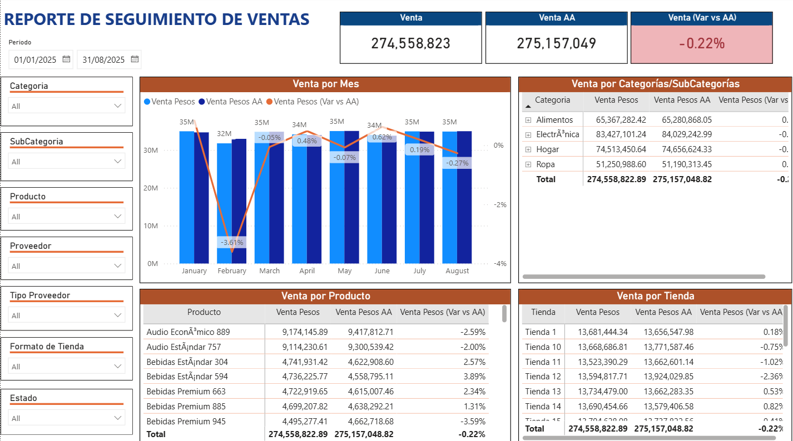
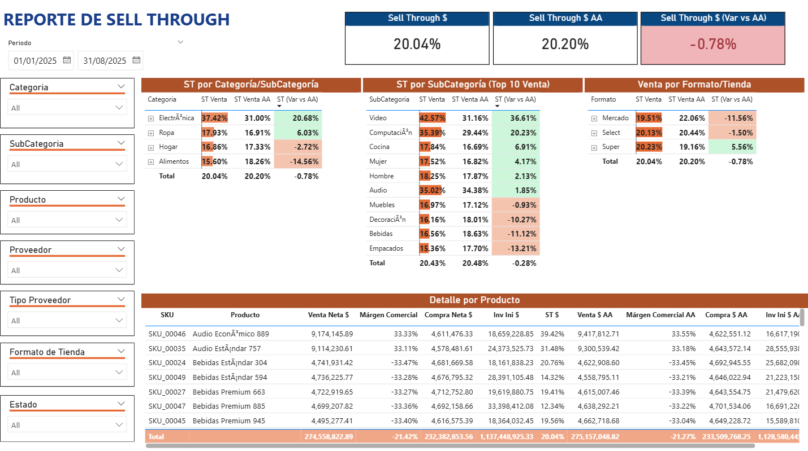
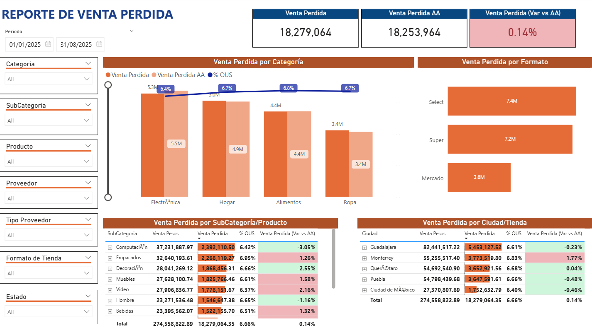

Hansel Rodríguez | Consultor en Analítica & Business Intelligence
Portafolio
Soy Hansel Rodríguez, consultor especializado en analítica de datos e inteligencia de negocios. Ayudo a las empresas a transformar sus datos en decisiones estratégicas que impulsan eficiencia y crecimiento. Durante los últimos cinco años, he diseñado e implementado soluciones analíticas que permiten monitorear indicadores clave, automatizar reportes y optimizar procesos operativos.
Mi experiencia abarca análisis, transformación, modelado y visualización de datos. He participado en proyectos de consultoría para sectores como retail, logística y transporte, desarrollando tableros interactivos, procesos ETL y estructuras de Data Warehousing que facilitan la toma de decisiones basada en datos.
Herramientas


{kind=link}
{kind=link}
Servicios
{kind=link}
BUSINESS INTELLIGENCE
- Diseño y desarrollo de dashboards
- Modelado de datos
- Automatización de reportes
- Consultoría en arquitectura BI

CIENCIA DE DATOS
- Modelos predictivos y de clasificación
- Integración en entornos de Big Data
- Visualización Avanzada

ANÁLISIS DE DATOS
- Creacion de indicadores clave
- Optimización de procesos mediante análisis
- Generación de reportes ejecutivos
Portafolio de Proyectos
Portafolio
| Dashboard de Indicadores Estratégicos de Transporte - Sigma Alimentos | DAXPower BI | https://github.com/HanselRdz/pbi-indicadores-transporte | Análisis de datosVisualización de datos |  | Proyecto profesional | |||
| Tablero para Seguimiento de Inventarios - Zano Fresh | DAXPower BISQL | Limpieza de datosVisualización de datos | Proyecto profesional | |||||
| Tablero de Indicadores Mensuales - Chedraui Corporativo México | AzurePower BIPython | https://github.com/HanselRdz/pbi-indicadores-retail | Análisis de datosLimpieza de datosVisualización de datos |  | Proyecto profesional | |||
| Herramientas Temporales para Planeación de Temporadas - Chedraui Corporativo México | AzureExcelPythonVBA | Análisis de datosLimpieza de datosVisualización de datos | Proyecto profesional |
{kind=link}
{kind=link}
{kind=link}
Contacto
Estoy disponible para colaborar en proyectos que generen valor para tu negocio, aplicando soluciones basadas en datos, automatización y visualización estratégica.
Si te interesa mejorar la toma de decisiones en tu empresa a través de los datos, puedes contactarme a través de los siguientes medios:
- 📧 Correo electrónico: hansel_rf@hotmail.com
- 💼 LinkedIn: https://www.linkedin.com/in/hansel-rodríguez/
- 📱 WhatsApp / Teléfono: (+52) 821 120 2696
Estaré encantado de conversar sobre tus necesidades y cómo podemos trabajar juntos.